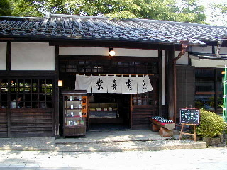
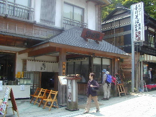
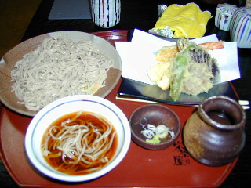
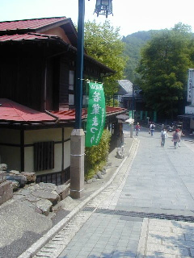
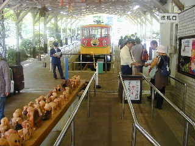
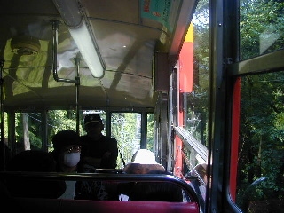
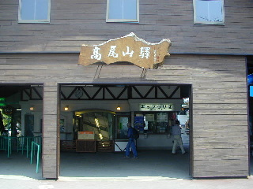
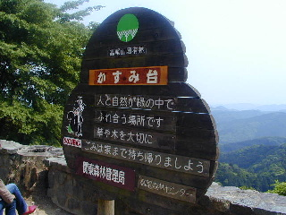

| ☆ＰＡＲＴ１ | |
|  | 高尾山巡礼の旅。 京王線高尾山口駅からケーブルカーの駅の方面に向い、 ほてほてと歩いて行くと、あっさり「甘味処 有喜堂」に到着。 さっそく中に入って七世さま直筆の書を拝んで終了〜。 |
|  | おいおい、もう終わりかよ！ いえいえメインディッシュは最後にとっておきましょう。 ということでまずは七世さまが高尾山入山の際に、 昼食を食したといわれる向かいの「栄茶屋本店」で腹ごしらえ。 |
|  | 七世さま御一行が食されたとされる「天せいろ」。 食いかけの写真ですまぬ。 美味しゅうございました。1,400円なり。 |
|  | 七世さま直筆の書を拝む前に修行を積まなけりゃなりませぬ。 霊峰高尾山に登って悟りを開くのです。 ケーブルカーを目指して再びほてほてと歩くと、 ピュアピュア18号、白装束に身をまとった七世さまの姿を 写した写真の撮影場所がありました。 ああ、七世さまの霊気をひしひしと感じます。 |
|  | いよいよお山を登るケーブルカーに乗り込みます。 幸せを呼ぶというふくろうの木彫り達に見送られながら。 私たちの明日はどっちだ？ |
|  | 日本一の急勾配で登るというこのケーブルカー。 ロープが切れたらニュートンの法則で奈落の底にまっしぐら。 車内の空気に緊張が走ります。修行の道はかくも険しいのか！ しかし線路の両側はもみじでいっぱい。 紅葉の時期はさぞ美しい光景が見られるのでしょうね。 七世さまはこの車内からどんな世界を見たのでしょうか？ |
|  | 何事もなく５分ほどで上の「高尾山駅」に到着。 さあここから山頂を目指し己の足で歩まねばなりません。 本当の修行はこれから始まるのです。 |
|  | ソフトクリームを食べながらのろのろ２分ほど歩くと 七世さまも立ち寄った言われる展望台が現れます。 なんかあらゆるポイントにことごとく容易に到達できます。 これは悟りの道も近いな、彼方に見えるは極楽浄土か などと寝ぼけたことを考えていたら、はわわ！ デジカメの電池が切れてしまいました。 写真が取れなければ七世さまのたどった道を記録することが かないません。そんな旅は意味な〜し。 修行ごっこはやめにしてそそくさと下山です。 |